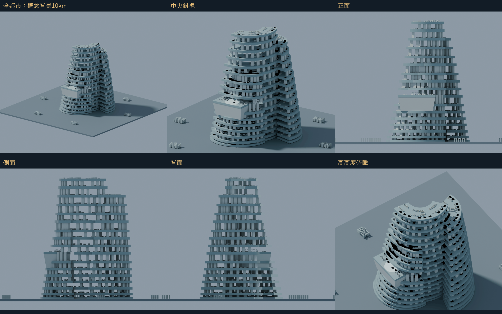
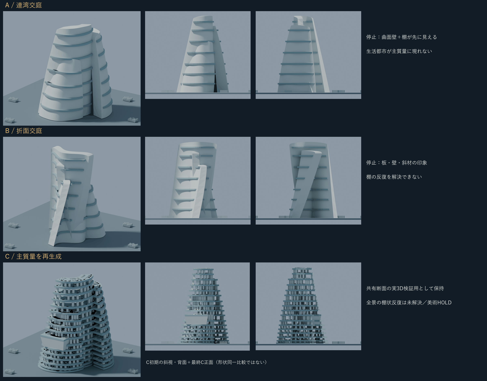
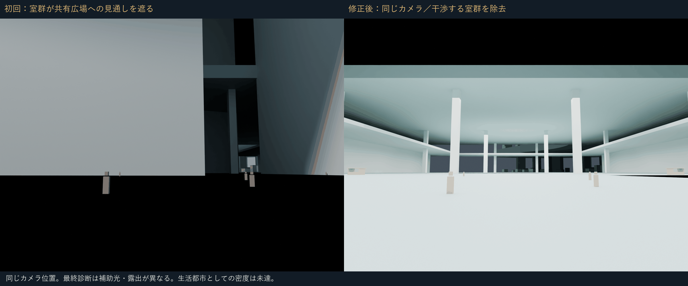
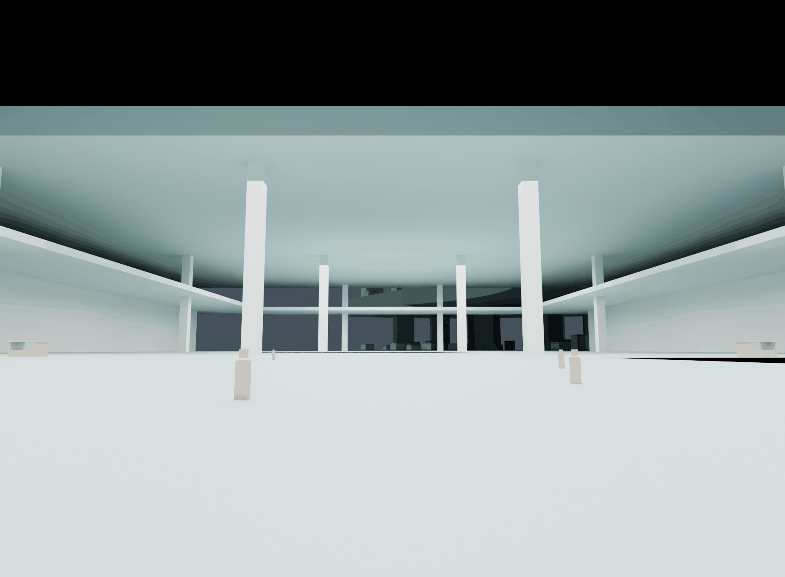
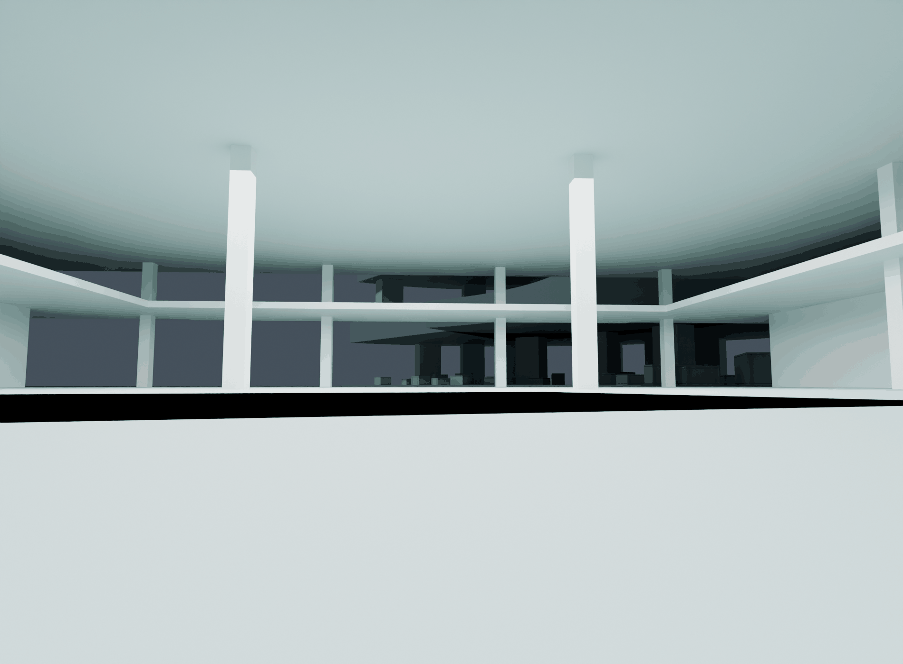
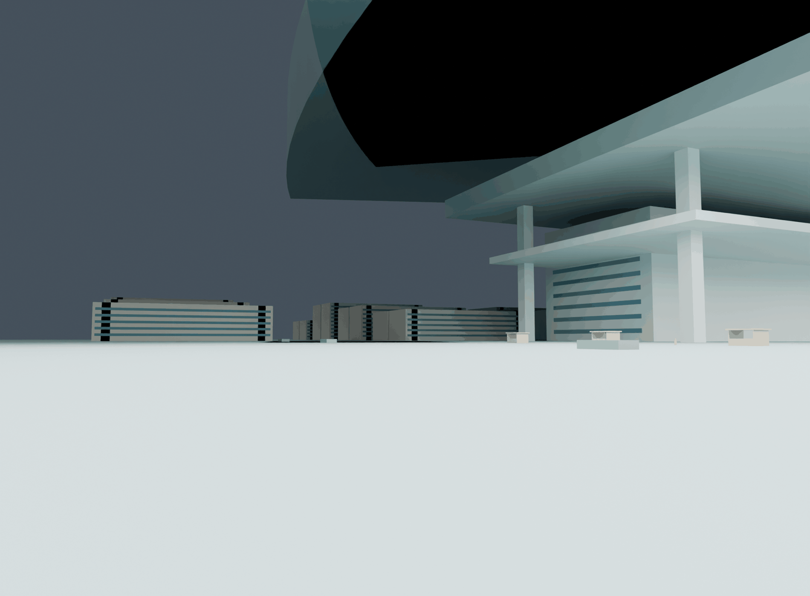
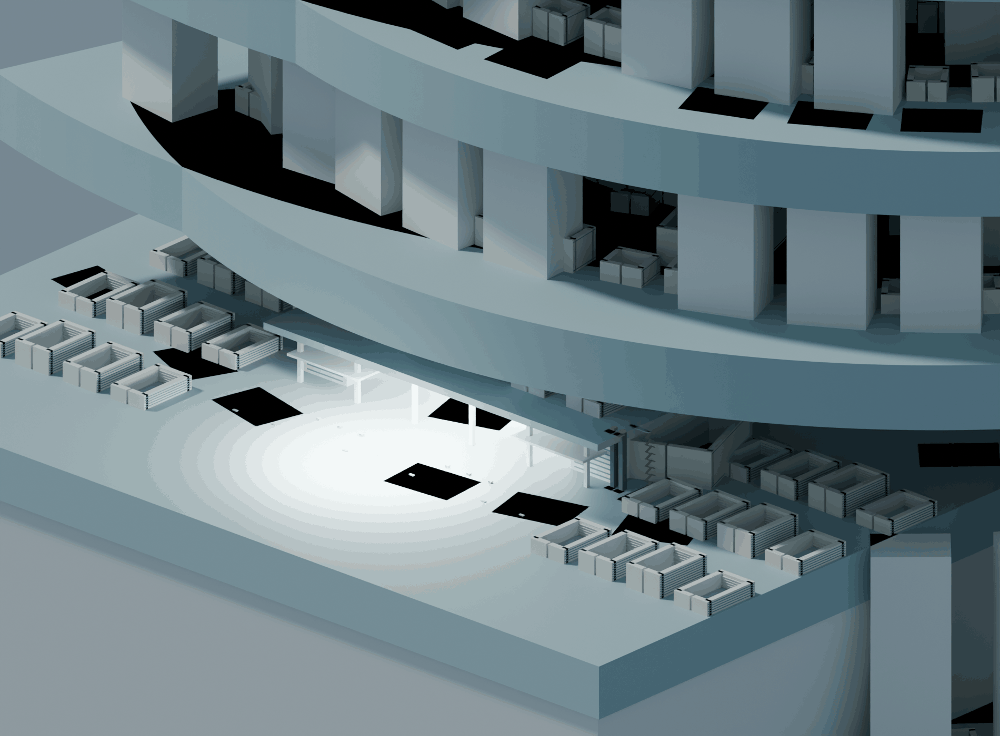
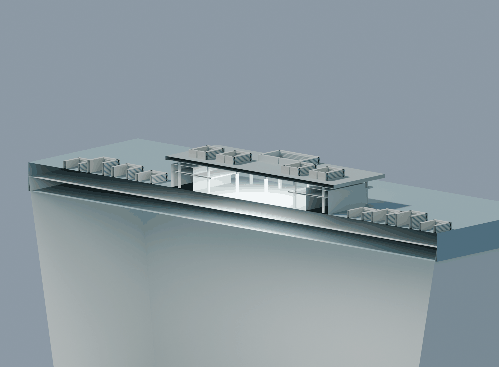

BLOCKOUT_3D / 美術HOLD。共有公共断面は制作したが、全景の棚状反復と中央主役性は未解決。正式採択・施工承認ではありません。
背景は未登録の10km概念配置。W0・H地区の正式復元ではありません。単画像はクリックして元解像度で確認できます。








図像は同じ実GLBから撮影。断面はコピーを切断。住宅・窓等は幾何学ですが、居住・構造・避難の認証ではありません。